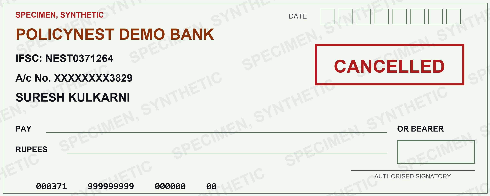

PolicyNest usability test: defect variants (SPECIMEN, SYNTHETIC)
Use these only for task A4 (scenario T5). The marksheet is deliberately out of focus with the date of birth unreadable. The cheque is in the account holder's father's name. Print at 100% / Actual size.
4b. Class 10 marksheet, blurry, date of birth unreadable (T5)
5b. Cancelled cheque in a parent's name (T5)
